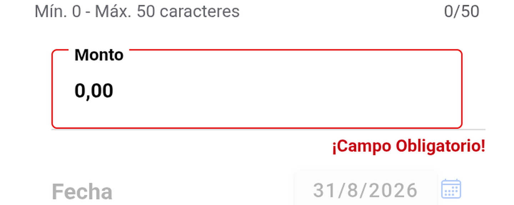

CONTROL DE CALIDADValidación de requerimiento
31 de agosto de 2026
31 de agosto de 2026
REQ «Mejora del botón Enviar y campos obligatorios» · Denario Premium Móvil · versión 6.6.21.3 · rama main
| Qué se validó | El comportamiento del botón Enviar y el señalamiento de campos obligatorios en los 7 módulos transaccionales |
| Cliente y playa | MIO LUBRICANTES Y FILTROS, CA · empresa única MIOP_ADM · El Yaque (confirmada en runtime) |
| Módulos | Pedidos · Inventarios · Cobros · Clientes · Devoluciones · Depósitos · Visitas |
| Alcance | Ninguna transacción se envió: los diálogos de confirmación se cancelaron y todos los formularios se descartaron sin guardar |
Acordados con QA antes de medir. Sólo estas dos cosas cuentan como fallo:
| # | Criterio |
|---|---|
| C1 | No debe dejar enviar con campos obligatorios vacíos |
| C2 | Si no deja enviar, debe comunicar al usuario QUÉ le falta |
| Módulo | C1 · No deja enviar | C2 · Comunica qué falta | Cómo lo comunica |
|---|---|---|---|
| Cobros | ✅ | ✅ | «¡Campo Obligatorio!» bajo el input + borde rojo |
| Clientes | ✅ | ✅ | 8 campos en rojo + alerta que nombra el primero |
| Depósitos | ✅ | ✅ | alerta nombrando el campo: «Seleccione un banco…» |
| Pedidos | ✅ | ✅ | alerta específica + pestaña PEDIDO en rojo |
| Inventarios | ✅ | ✅ | alerta específica |
| Visitas | ✅ | ✅ | alerta específica |
| Devoluciones | ✅ | 🔴 NO | con la fila del producto colapsada no se ve nada |

| Módulo | ¿Ocurre? | Pestaña que se marca mal | Origen |
|---|---|---|---|
| Devoluciones | 🔴 SÍ | GENERAL | return-logic.service.ts:454 |
| Depósitos | 🔴 SÍ | GENERAL | deposit.service.ts:400 |
| Cobros | 🔴 SÍ | GENERAL | collection-logic.service.ts:3080 |
| Inventarios | 🔴 SÍ | INVENTARIO | inventarios-logic.service.ts:356 |
| Pedidos | no | el marcador se retira correctamente | |
| Visitas | no | usa el mismo patrón correcto que Pedidos | |
| Clientes | N/A | tiene pestañas, pero nunca reciben el marcador | |
Existe una función que responde a la pregunta «¿en qué pestaña está el primer error?» para que la app salte ahí y la marque. El problema es que esa función siempre responde con una pestaña: nunca puede decir “ninguna”.
Esa última línea es la causa. Cuando ya está todo correcto, la función cae ahí y contesta «General», y la app la pinta de rojo. Por eso el aviso aparece al corregir, no al fallar: mientras hay un error real la función acierta; en cuanto se resuelve, señala una pestaña por defecto.
Pulsar Enviar, descartar sin guardar y abrir otra devolución desde el listado: la nueva nace ya marcada, y al elegir cliente la pestaña PRODUCTOS sale en rojo sin haber pulsado Enviar. Abriéndola desde el menú principal nace limpia.
📷 img/devoluciones-tabroja-arrastrada-de-transaccion-descartada.png
Con el producto agregado pero incompleto, al pulsar Enviar:
| Qué ocurre | Consecuencia |
|---|---|
Alerta Complete cantidad y documento en todos los productos. | No dice cuál producto ni cuál campo — con varios productos es inservible |
| La fila del producto no cambia de aspecto | La app le aplica la clase return-send-error-hint con --border-color:#c5000f, pero no produce ningún efecto visible |
| Sólo al expandir la fila aparecen los campos en rojo | El usuario que no la expanda no tiene forma de saber qué corregir |
| # | Observación | Por qué NO es un fallo |
|---|---|---|
| 1 | Cobros nace con Enviar deshabilitado | Es coherente: un cobro no puede enviarse sin un método de pago, así que aún no hay nada que validar. Se habilita al cargar documento y método |
| 2 | Clientes no deshabilita el botón tras el rechazo | Pero tampoco deja enviar: muestra Nombre obligatorio. y marca 8 campos en rojo. C1 y C2 se cumplen |
| 3 | Cada módulo comunica de forma distinta | Tres mecanismos conviven: mensaje bajo el input (Cobros), campo en rojo (Clientes, Devoluciones) y alerta que nombra el campo (los demás). Todos informan |
| 4 | Visitas aplica la clase pero nunca pinta | Su estilo define --color sin el color plano. Es la razón por la que Visitas no sufre el defecto 1 |
| 5 | Inventarios: el modal de captura valida como antes | Alerta Complete cantidad, unidad, fecha y lote… sin marcar campos. Es un botón del modal, no Enviar — fuera del alcance del REQ, pero conviene saber que quedó sin tocar |
| 6 | Clientes degrada el aviso en la 2.ª pulsación | Pasa de Nombre obligatorio. a un genérico. No incumple —la información sigue en los campos rojos— pero va en contra de la intención del REQ |
| # | Acción | Alcance |
|---|---|---|
| 1 | Añadir el caso “ninguna pestaña con error” a los 4 resolvedores, o sustituirlos por el predicado que ya usan Pedidos y Visitas | Corrige el defecto 1 en los 4 módulos con un cambio de una línea en cada uno |
| 2 | Que la clase return-send-error-hint pinte la fila del producto | Corrige el defecto 3 |
| 3 | Limpiar el estado de validación al abrir una transacción nueva desde el listado | Corrige el defecto 2 |
| # | Pendiente | Por qué importa |
|---|---|---|
| 1 | El REQ en la capa web | Sólo se midió la aplicación móvil |
| 2 | Otros clientes | Todo se midió en MIO LUBRICANTES. Las validaciones dependen de variables globales (validateReturn, expirationBatch, requeridedNroFactura…), así que otro cliente puede exigir campos distintos |
| 3 | Comparación con RUN y EL EDEN | El REQ se probó allí en su momento; ese material no está disponible y no se pudo contrastar |
| 4 | Si el texto de los mensajes es comprensible | Se verificó que existe y dónde aparece, no si el usuario lo entiende |
| 5 | Pedidos: comportamiento al quitar un producto ya agregado | No aplica al caso de campos, pero no se comprobó si vuelve a marcar |
reports/mio_parts/req_boton_enviar_20260831/.req-boton-enviar.md.
Las capturas son recortes ampliados de las tomas originales del dispositivo, conservadas sin editar
en img/ (35 capturas). Método reutilizable en
guiones-regresion/guion-req-boton-enviar.md.